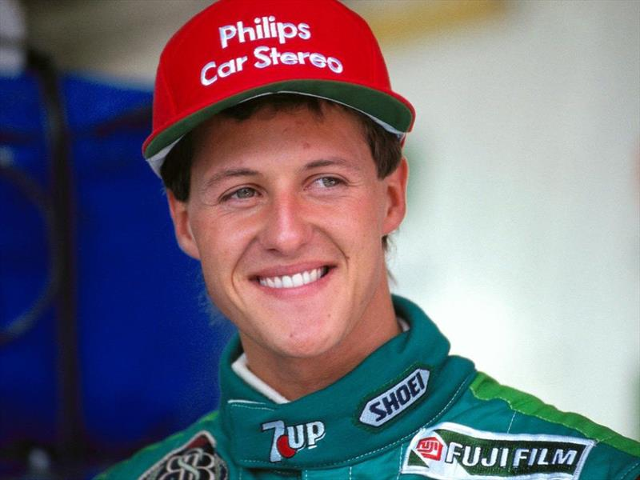
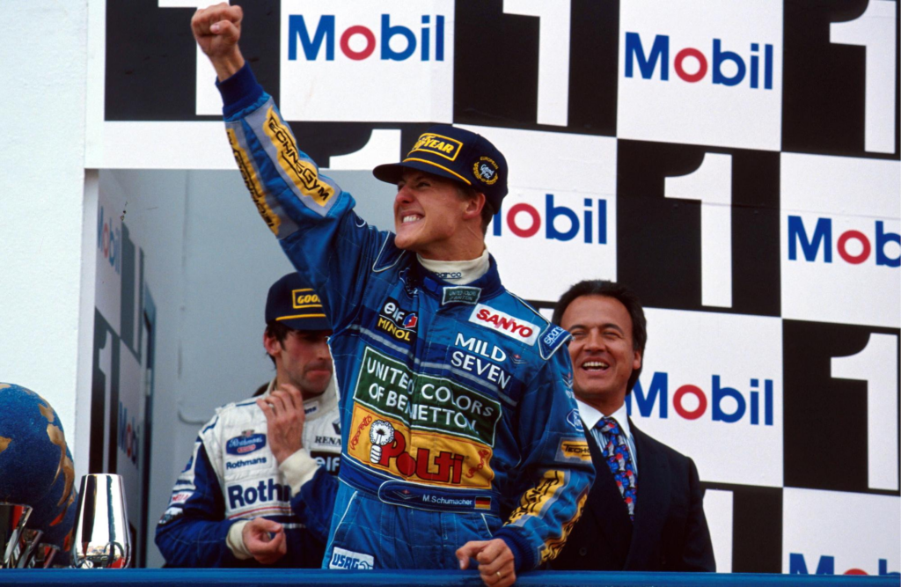
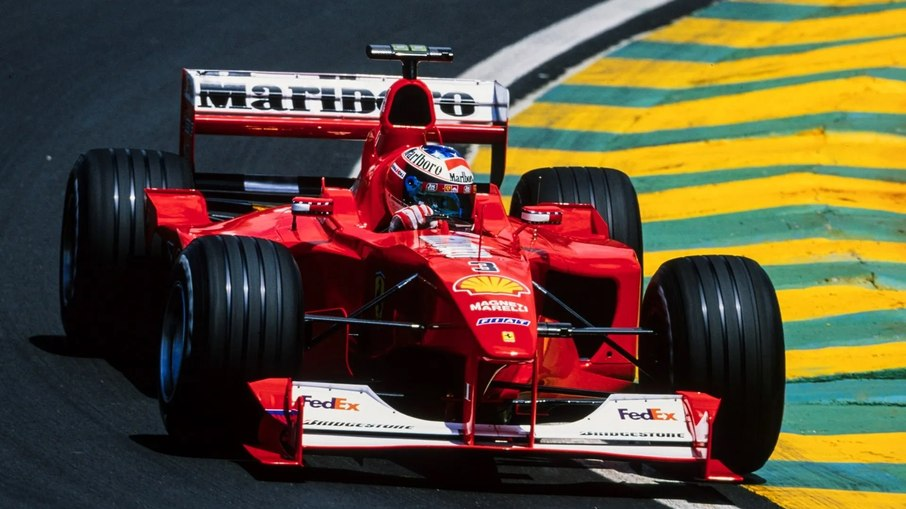
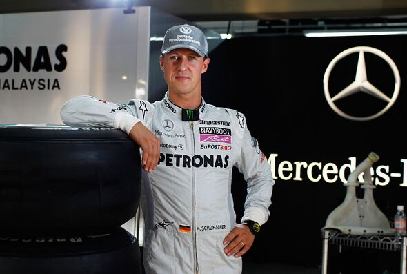

Trajetória
🏎️ A Ascensão Meteórica (1991 - 1993)

Schumacher não veio de uma família rica; seu pai gerenciava um kartódromo em Kerpen, na Alemanha.
- Estreia em Spa (1991): Ele estreou pela Jordan como substituto e chocou o paddock ao classificar em 7º lugar em uma pista que nunca tinha visto. Flavio Briatore (o mesmo que descobriu Alonso) o "roubou" para a Benetton logo na corrida seguinte.
- Primeira Vitória (1992): Exatamente um ano após sua estreia, ele venceu em Spa-Francorchamps, provando que era o sucessor natural de Senna e Prost.
💎 Os Anos de Benetton (1994 - 1995)

Foi aqui que Michael se tornou o vilão para uns e o herói para outros.
- Bicampeonato (94-95): Em 1994, após a morte de Senna, Schumacher dominou o ano, mas o título foi decidido em uma colisão controversa com Damon Hill na última corrida. Em 1995, ele venceu de forma muito mais tranquila, mostrando que o carro da Benetton era uma extensão de seu corpo.
🐎 O Renascimento da Ferrari (1996 - 1999)

Em 1996, Schumacher tomou a decisão que definiria seu legado: trocou a Benetton campeã pela Ferrari, que na época era uma equipe desorganizada e sem títulos há 17 anos.
- Construção do Dream Team: Ele levou consigo os gênios Ross Brawn e Rory Byrne. Juntos, eles reconstruíram a Ferrari do zero.
- A Dor do "Quase": Michael perdeu títulos em 97 (desclassificado por colidir com Villeneuve), 98 (para Hakkinen) e 99 (quando quebrou a perna em Silverstone). Parecia que o título com a Ferrari nunca viria.
🔴 O Domínio Absoluto (2000 - 2004)

O que aconteceu nestes cinco anos foi o período de maior hegemonia que a F1 já tinha visto até então.
- Pentacampeonato Consecutivo: Schumacher venceu todos os títulos entre 2000 e 2004.
- Perfeição Técnica:Ele era capaz de fazer voltas de classificação durante uma corrida inteira. Sua sintonia com a equipe era tamanha que as estratégias de pit stop da Ferrari pareciam mágica.
- Heptacampeonato:Em 2004, ele alcançou o impossível 7º título, um número que muitos achavam que jamais seria igualado (até Lewis Hamilton aparecer).
🏁 Aposentadoria, Retorno e Legado

Schumacher se aposentou da Ferrari em 2006, mas o "bichinho" da velocidade o trouxe de volta em 2010.
- O Projeto Mercedes (2010-2012): Michael voltou para ajudar a estruturar a recém-criada equipe Mercedes. Embora não tenha vencido corridas, ele foi fundamental para desenvolver a base do que viria a ser o carro dominante de Hamilton anos depois.
- Perfeição Técnica:Ele era capaz de fazer voltas de classificação durante uma corrida inteira. Sua sintonia com a equipe era tamanha que as estratégias de pit stop da Ferrari pareciam mágica.
- O Legado: Schumacher elevou o sarrafo do esporte. Ele introduziu dietas rigorosas e treinos físicos que hoje são padrão.